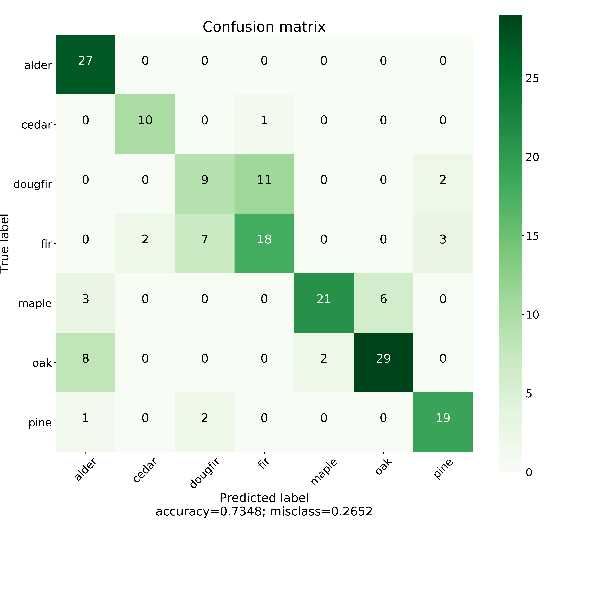

Project Design
This project was built off of a VGG-16 Convolutional Neural network.
I initialized the model with the ImageNet weights and proceeded to retrain the model with transfer learning. The model was trained on pictures that are 244x244 pixels in RGB channels.
The top 12 layers were frozen and the ImageNet weights were maintained. The bottom 4 layers were retrained on images of tree leaves and boughs.
The dataset included approximately 550 pictures of each of 7 classes of trees and was additionally augmented with computer generated images based on rotations, scalings, skewing of original images.
The model utilized multiple fully connected layers
This project was built off of a VGG-16 Convolutional Neural Network. The model benefits from a strategy known as transfer learning.
I initialized the model with the VGG-16 Imagenet weights and proceeded to retrain it. The model scaled images to 244x244 pixels in 3 color channels.
The VGG-16 model features multiple sets of convolution layers followed by pooling layers. I tested many combinations and found that freezing the top 12 layers and retraining the weights of the bottom 4 layers (3 convolution layers and 1 pooling layer) provided the best results. I added dropout and two fully connected layers before having the model identify pictures as one of 7 categories.
On out of sample test data, the model has approximately 80% accuracy, precision, and recall across the 7 classes. It performs best on Alder and Cedar classification and struggles with distinguishing between Douglas Fir trees and Fir trees.
I encourage you to take pictures and upload them to test the model out. I have included sample images of each classification to assist in your understanding of the various tree categories.
It is also worth noting, this is not an exhaustive list of trees found in the Pacific Northwest. This list of trees was based on my ability to find enough pictures to have a large enough dataset to train the model. There are many different future directions this project could go in and ways I can extend this proof of concept.
I could augment each of the current classifications with additional datapoint to help improve model performance. I could gather pictures of additional tree genera to increase the number of categories. I could extend the model to identifying trees by species instead of genus which would require collecting significantly more data. I believe to have a really successful model, it would be ideal to build a model that makes predictions based on images of leaves, bark, and fruit. This is a larger extension of the project that is outside of my current scope.
